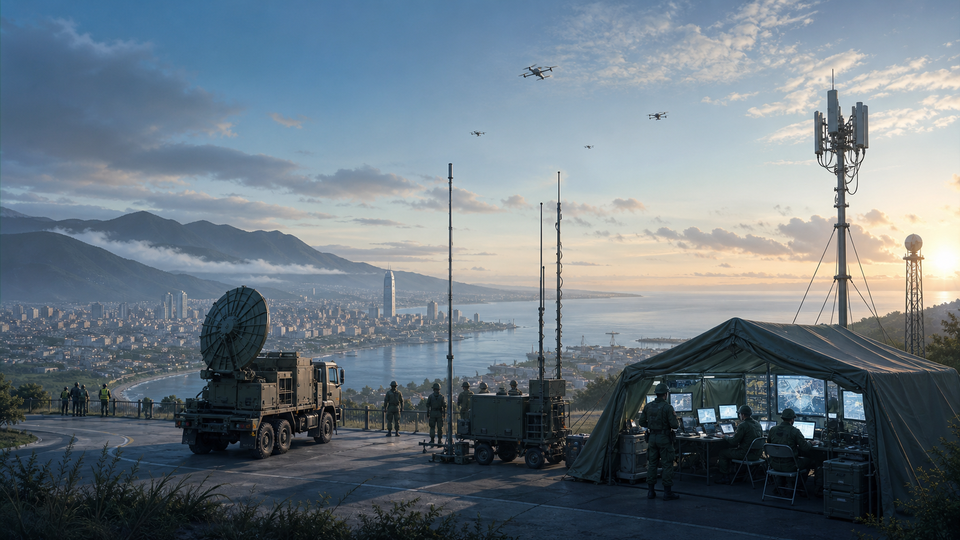

全球局勢分析電子報
每週拆解政治、經濟與科技變局，幫你看懂新聞背後的力量。
不追逐即時熱點，而是整理脈絡、利益關係、長期趨勢與下一步風險。適合想穩定掌握國際局勢、台海安全與全球市場變化的讀者。
Reports
週報與月報
世勢日報｜近24小時重點版
今日主軸： 美國把伊朗壓力轉向金融封鎖，同時維持對中國的關稅槓桿；歐洲加碼烏克蘭遠程能力，中東與敘利亞金融重接軌牽動能源、制裁與重建秩序。台灣則因高階 AI 伺服器外流案，成為美中科技。
閱讀日報世勢週報｜孫子兵法詮釋版
本週主軸： 台灣把漢光演習推進到民生網路、無人機與海巡整合；俄烏黑海攻防、中東荷莫茲與加薩穩定部隊，則把軍事風險直接傳導到能源、航運與外交安排。美國經濟數據顯示通膨略降但消費轉弱，AI。
閱讀週報世勢月報｜孫子兵法詮釋版
近30天主軸： 美中競爭由關稅與晶片延伸到無人機、人才與出口許可；台海演訓從軍事場景擴張到社會通訊韌性；俄烏、中東與航運水道則持續把安全風險轉化成能源、保險與物價壓力。
閱讀月報Latest
最新文章
荷莫茲封鎖風險為何會變成全球通膨問題
從航運保險、油價、美元利率到亞洲進口成本，拆解一條海峽如何影響全球價格。

漢光演習透露的不是火力，而是社會韌性
海巡、通訊、無人機與民間動員正在成為台灣防衛敘事的核心。
美中晶片管制進入「驗證鏈」階段
出口管制不再只看最終買家，也開始檢查代工、前台公司與資料中心供應鏈。
Topics
三個固定入口
Start Here
新讀者先讀這些
- 如何閱讀「世勢觀察」：先看利益鏈，再看新聞標題 定位與方法
- 本週風險地圖：能源、戰爭與台海的交會點 每週主線
- 下週觀察清單：三個數據、兩場會議、一條航道 行動清單
Newsletter
把每週世勢分析寄到你的信箱。
每封信包含一篇主線分析、五則重點事件、三個下週觀察指標。只收 email，之後可以接上 Substack、Buttondown、Mailchimp 或自架 API。